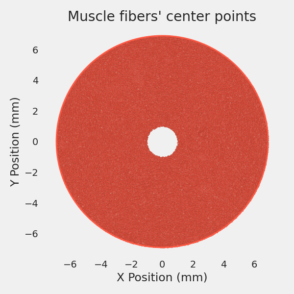
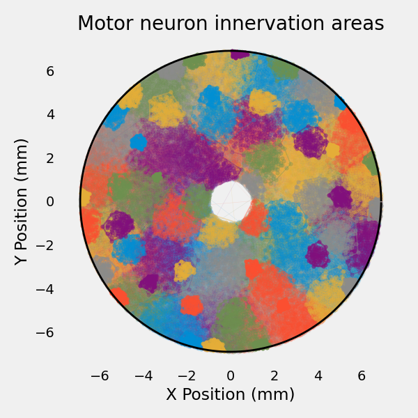

Note
Go to the end to download the full example code.
Muscle Model#
The spike trains alone are not enough to create EMG signals.
To create EMG signals, we need to create a muscle model that will distribute the motor units and fibers within the muscle volume.
Import Libraries#
from pathlib import Path
import joblib
import matplotlib.pyplot as plt
import numpy as np
import quantities as pq
from myogen import simulator
from myogen.utils.plotting.muscle import plot_innervation_areas_2d, plot_mf_centers
plt.style.use("fivethirtyeight")
Define Parameters#
The muscle model is created using the Muscle object.
The Muscle object takes the following parameters:
recruitment_thresholds: Recruitment thresholds of the motor unitsradius: Radius of the muscle in mmfiber_density: Fiber density per mm²max_innervation_area_to_total_muscle_area__ratio: Maximum innervation area to total muscle area ratiogrid_resolution: Spatial resolution for muscle discretization
Since the recruitment thresholds are already generated, we can load them from the previous example using joblib.
# Load recruitment thresholds
save_path = Path("./results")
recruitment_thresholds = joblib.load(save_path / "thresholds.pkl")
# Define muscle parameters
muscle_radius = 4.9 * pq.mm # Muscle radius in mm
mean_fiber_length = 32 * pq.mm # Mean fiber length in mm
fiber_length_variation = 3 * pq.mm # Fiber length variation in mm
fiber_density = 400 * pq.mm**-2 # Fiber density in fibers per mm²
# Define simulation parameters
max_innervation_ratio = 1 / 4 # Maximum motor unit territory size
grid_resolution = 256 # Spatial resolution for muscle discretization
Create Muscle Model#
Note
Depending on the parameters, the simulation can take a few minutes to run.
To avoid running the simulation every time, we can save the muscle model using joblib.
# Create muscle model
muscle = simulator.Muscle(
recruitment_thresholds=recruitment_thresholds,
radius_bone__mm=1.0 * pq.mm, # Non-zero bone radius required for proper MUAP amplitudes
fiber_density__fibers_per_mm2=fiber_density,
fat_thickness__mm=10 * pq.mm,
autorun=True,
)
# Save muscle model for future use
joblib.dump(muscle, save_path / "muscle_model.pkl")
# Display muscle statistics
total_fibers = sum(muscle.resulting_number_of_innervated_fibers)
print("Muscle model statistics:")
print(f"\tTotal muscle fibers: {total_fibers}")
print(f"\tMean fibers per MU: {total_fibers / len(recruitment_thresholds):.1f}")
print(f"\tMuscle cross-sectional area: {np.pi * muscle_radius**2:.1f}")
Removed 1247 fibers inside bone radius (r < 1.000 mm)
Calculating out-of-circle coefficients: 0%| | 0/100 [00:00<?, ?MU/s]
Calculating out-of-circle coefficients: 1%| | 1/100 [00:10<16:54, 10.25s/MU]
Calculating out-of-circle coefficients: 4%|▍ | 4/100 [00:14<04:48, 3.00s/MU]
Calculating out-of-circle coefficients: 6%|▌ | 6/100 [00:18<04:04, 2.60s/MU]
Calculating out-of-circle coefficients: 8%|▊ | 8/100 [00:24<04:13, 2.75s/MU]
Calculating out-of-circle coefficients: 10%|█ | 10/100 [00:27<03:27, 2.31s/MU]
Calculating out-of-circle coefficients: 13%|█▎ | 13/100 [00:30<02:33, 1.77s/MU]
Calculating out-of-circle coefficients: 14%|█▍ | 14/100 [00:30<02:11, 1.53s/MU]
Calculating out-of-circle coefficients: 15%|█▌ | 15/100 [00:37<03:43, 2.62s/MU]
Calculating out-of-circle coefficients: 18%|█▊ | 18/100 [00:41<02:43, 1.99s/MU]
Calculating out-of-circle coefficients: 19%|█▉ | 19/100 [00:43<02:42, 2.00s/MU]
Calculating out-of-circle coefficients: 20%|██ | 20/100 [00:46<02:56, 2.20s/MU]
Calculating out-of-circle coefficients: 22%|██▏ | 22/100 [00:51<02:54, 2.24s/MU]
Calculating out-of-circle coefficients: 24%|██▍ | 24/100 [00:53<02:15, 1.79s/MU]
Calculating out-of-circle coefficients: 26%|██▌ | 26/100 [00:57<02:23, 1.94s/MU]
Calculating out-of-circle coefficients: 28%|██▊ | 28/100 [00:59<01:51, 1.55s/MU]
Calculating out-of-circle coefficients: 30%|███ | 30/100 [01:03<02:03, 1.76s/MU]
Calculating out-of-circle coefficients: 32%|███▏ | 32/100 [01:05<01:42, 1.51s/MU]
Calculating out-of-circle coefficients: 34%|███▍ | 34/100 [01:10<02:00, 1.83s/MU]
Calculating out-of-circle coefficients: 36%|███▌ | 36/100 [01:13<01:51, 1.74s/MU]
Calculating out-of-circle coefficients: 38%|███▊ | 38/100 [01:16<01:43, 1.66s/MU]
Calculating out-of-circle coefficients: 39%|███▉ | 39/100 [01:17<01:28, 1.45s/MU]
Calculating out-of-circle coefficients: 40%|████ | 40/100 [01:20<01:52, 1.88s/MU]
Calculating out-of-circle coefficients: 41%|████ | 41/100 [01:24<02:14, 2.28s/MU]
Calculating out-of-circle coefficients: 43%|████▎ | 43/100 [01:24<01:22, 1.45s/MU]
Calculating out-of-circle coefficients: 44%|████▍ | 44/100 [01:28<01:48, 1.94s/MU]
Calculating out-of-circle coefficients: 45%|████▌ | 45/100 [01:30<01:46, 1.94s/MU]
Calculating out-of-circle coefficients: 47%|████▋ | 47/100 [01:30<01:03, 1.20s/MU]
Calculating out-of-circle coefficients: 48%|████▊ | 48/100 [01:34<01:38, 1.89s/MU]
Calculating out-of-circle coefficients: 49%|████▉ | 49/100 [01:35<01:15, 1.49s/MU]
Calculating out-of-circle coefficients: 51%|█████ | 51/100 [01:35<00:47, 1.04MU/s]
Calculating out-of-circle coefficients: 52%|█████▏ | 52/100 [01:39<01:20, 1.68s/MU]
Calculating out-of-circle coefficients: 53%|█████▎ | 53/100 [01:39<01:01, 1.31s/MU]
Calculating out-of-circle coefficients: 56%|█████▌ | 56/100 [01:45<01:12, 1.66s/MU]
Calculating out-of-circle coefficients: 60%|██████ | 60/100 [01:48<00:48, 1.21s/MU]
Calculating out-of-circle coefficients: 62%|██████▏ | 62/100 [01:49<00:40, 1.06s/MU]
Calculating out-of-circle coefficients: 64%|██████▍ | 64/100 [01:52<00:39, 1.09s/MU]
Calculating out-of-circle coefficients: 66%|██████▌ | 66/100 [01:53<00:30, 1.12MU/s]
Calculating out-of-circle coefficients: 68%|██████▊ | 68/100 [01:56<00:36, 1.13s/MU]
Calculating out-of-circle coefficients: 71%|███████ | 71/100 [01:57<00:23, 1.21MU/s]
Calculating out-of-circle coefficients: 72%|███████▏ | 72/100 [02:00<00:31, 1.12s/MU]
Calculating out-of-circle coefficients: 75%|███████▌ | 75/100 [02:01<00:20, 1.23MU/s]
Calculating out-of-circle coefficients: 76%|███████▌ | 76/100 [02:02<00:19, 1.21MU/s]
Calculating out-of-circle coefficients: 77%|███████▋ | 77/100 [02:04<00:26, 1.14s/MU]
Calculating out-of-circle coefficients: 79%|███████▉ | 79/100 [02:06<00:22, 1.06s/MU]
Calculating out-of-circle coefficients: 82%|████████▏ | 82/100 [02:07<00:13, 1.31MU/s]
Calculating out-of-circle coefficients: 85%|████████▌ | 85/100 [02:09<00:09, 1.53MU/s]
Calculating out-of-circle coefficients: 87%|████████▋ | 87/100 [02:09<00:07, 1.73MU/s]
Calculating out-of-circle coefficients: 88%|████████▊ | 88/100 [02:10<00:06, 1.85MU/s]
Calculating out-of-circle coefficients: 89%|████████▉ | 89/100 [02:11<00:07, 1.42MU/s]
Calculating out-of-circle coefficients: 91%|█████████ | 91/100 [02:11<00:04, 1.95MU/s]
Calculating out-of-circle coefficients: 92%|█████████▏| 92/100 [02:13<00:05, 1.41MU/s]
Calculating out-of-circle coefficients: 93%|█████████▎| 93/100 [02:14<00:06, 1.14MU/s]
Calculating out-of-circle coefficients: 96%|█████████▌| 96/100 [02:15<00:02, 1.84MU/s]
Calculating out-of-circle coefficients: 97%|█████████▋| 97/100 [02:15<00:01, 2.00MU/s]
Calculating out-of-circle coefficients: 98%|█████████▊| 98/100 [02:17<00:01, 1.29MU/s]
Calculating out-of-circle coefficients: 100%|██████████| 100/100 [02:17<00:00, 1.37s/MU]
Assigning muscle fibers to motor neurons: 0%| | 0/58755 [00:00<?, ?MF/s]
Assigning muscle fibers to motor neurons: 0%| | 177/58755 [00:00<00:33, 1768.58MF/s]
Assigning muscle fibers to motor neurons: 1%| | 354/58755 [00:00<00:33, 1763.44MF/s]
Assigning muscle fibers to motor neurons: 1%| | 532/58755 [00:00<00:32, 1769.22MF/s]
Assigning muscle fibers to motor neurons: 1%| | 710/58755 [00:00<00:32, 1770.61MF/s]
Assigning muscle fibers to motor neurons: 2%|▏ | 888/58755 [00:00<00:32, 1770.28MF/s]
Assigning muscle fibers to motor neurons: 2%|▏ | 1066/58755 [00:00<00:32, 1770.50MF/s]
Assigning muscle fibers to motor neurons: 2%|▏ | 1244/58755 [00:00<00:32, 1770.60MF/s]
Assigning muscle fibers to motor neurons: 2%|▏ | 1422/58755 [00:00<00:32, 1769.76MF/s]
Assigning muscle fibers to motor neurons: 3%|▎ | 1599/58755 [00:00<00:32, 1768.91MF/s]
Assigning muscle fibers to motor neurons: 3%|▎ | 1777/58755 [00:01<00:32, 1770.31MF/s]
Assigning muscle fibers to motor neurons: 3%|▎ | 1955/58755 [00:01<00:32, 1769.25MF/s]
Assigning muscle fibers to motor neurons: 4%|▎ | 2132/58755 [00:01<00:32, 1767.97MF/s]
Assigning muscle fibers to motor neurons: 4%|▍ | 2309/58755 [00:01<00:31, 1766.59MF/s]
Assigning muscle fibers to motor neurons: 4%|▍ | 2487/58755 [00:01<00:31, 1769.17MF/s]
Assigning muscle fibers to motor neurons: 5%|▍ | 2664/58755 [00:01<00:31, 1768.68MF/s]
Assigning muscle fibers to motor neurons: 5%|▍ | 2842/58755 [00:01<00:31, 1769.43MF/s]
Assigning muscle fibers to motor neurons: 5%|▌ | 3019/58755 [00:01<00:31, 1769.58MF/s]
Assigning muscle fibers to motor neurons: 5%|▌ | 3197/58755 [00:01<00:31, 1770.75MF/s]
Assigning muscle fibers to motor neurons: 6%|▌ | 3375/58755 [00:01<00:31, 1770.41MF/s]
Assigning muscle fibers to motor neurons: 6%|▌ | 3553/58755 [00:02<00:31, 1770.66MF/s]
Assigning muscle fibers to motor neurons: 6%|▋ | 3731/58755 [00:02<00:31, 1767.30MF/s]
Assigning muscle fibers to motor neurons: 7%|▋ | 3908/58755 [00:02<00:31, 1763.47MF/s]
Assigning muscle fibers to motor neurons: 7%|▋ | 4086/58755 [00:02<00:30, 1765.75MF/s]
Assigning muscle fibers to motor neurons: 7%|▋ | 4264/58755 [00:02<00:30, 1769.25MF/s]
Assigning muscle fibers to motor neurons: 8%|▊ | 4441/58755 [00:02<00:30, 1768.00MF/s]
Assigning muscle fibers to motor neurons: 8%|▊ | 4618/58755 [00:02<00:30, 1767.88MF/s]
Assigning muscle fibers to motor neurons: 8%|▊ | 4795/58755 [00:02<00:30, 1767.61MF/s]
Assigning muscle fibers to motor neurons: 8%|▊ | 4972/58755 [00:02<00:30, 1767.07MF/s]
Assigning muscle fibers to motor neurons: 9%|▉ | 5149/58755 [00:02<00:30, 1766.87MF/s]
Assigning muscle fibers to motor neurons: 9%|▉ | 5326/58755 [00:03<00:30, 1765.79MF/s]
Assigning muscle fibers to motor neurons: 9%|▉ | 5504/58755 [00:03<00:30, 1767.04MF/s]
Assigning muscle fibers to motor neurons: 10%|▉ | 5681/58755 [00:03<00:30, 1765.93MF/s]
Assigning muscle fibers to motor neurons: 10%|▉ | 5858/58755 [00:03<00:29, 1765.74MF/s]
Assigning muscle fibers to motor neurons: 10%|█ | 6036/58755 [00:03<00:29, 1767.84MF/s]
Assigning muscle fibers to motor neurons: 11%|█ | 6213/58755 [00:03<00:29, 1767.84MF/s]
Assigning muscle fibers to motor neurons: 11%|█ | 6391/58755 [00:03<00:29, 1768.46MF/s]
Assigning muscle fibers to motor neurons: 11%|█ | 6569/58755 [00:03<00:29, 1769.05MF/s]
Assigning muscle fibers to motor neurons: 11%|█▏ | 6747/58755 [00:03<00:29, 1769.98MF/s]
Assigning muscle fibers to motor neurons: 12%|█▏ | 6924/58755 [00:03<00:29, 1751.88MF/s]
Assigning muscle fibers to motor neurons: 12%|█▏ | 7100/58755 [00:04<00:29, 1750.21MF/s]
Assigning muscle fibers to motor neurons: 12%|█▏ | 7276/58755 [00:04<00:29, 1751.55MF/s]
Assigning muscle fibers to motor neurons: 13%|█▎ | 7454/58755 [00:04<00:29, 1758.03MF/s]
Assigning muscle fibers to motor neurons: 13%|█▎ | 7632/58755 [00:04<00:29, 1761.79MF/s]
Assigning muscle fibers to motor neurons: 13%|█▎ | 7810/58755 [00:04<00:28, 1765.46MF/s]
Assigning muscle fibers to motor neurons: 14%|█▎ | 7987/58755 [00:04<00:28, 1766.39MF/s]
Assigning muscle fibers to motor neurons: 14%|█▍ | 8165/58755 [00:04<00:28, 1768.56MF/s]
Assigning muscle fibers to motor neurons: 14%|█▍ | 8342/58755 [00:04<00:28, 1768.57MF/s]
Assigning muscle fibers to motor neurons: 14%|█▍ | 8519/58755 [00:04<00:28, 1765.88MF/s]
Assigning muscle fibers to motor neurons: 15%|█▍ | 8697/58755 [00:04<00:28, 1768.03MF/s]
Assigning muscle fibers to motor neurons: 15%|█▌ | 8874/58755 [00:05<00:28, 1768.50MF/s]
Assigning muscle fibers to motor neurons: 15%|█▌ | 9051/58755 [00:05<00:28, 1761.57MF/s]
Assigning muscle fibers to motor neurons: 16%|█▌ | 9229/58755 [00:05<00:28, 1764.52MF/s]
Assigning muscle fibers to motor neurons: 16%|█▌ | 9406/58755 [00:05<00:27, 1766.06MF/s]
Assigning muscle fibers to motor neurons: 16%|█▋ | 9584/58755 [00:05<00:27, 1767.88MF/s]
Assigning muscle fibers to motor neurons: 17%|█▋ | 9761/58755 [00:05<00:27, 1766.95MF/s]
Assigning muscle fibers to motor neurons: 17%|█▋ | 9939/58755 [00:05<00:27, 1769.29MF/s]
Assigning muscle fibers to motor neurons: 17%|█▋ | 10117/58755 [00:05<00:27, 1769.85MF/s]
Assigning muscle fibers to motor neurons: 18%|█▊ | 10295/58755 [00:05<00:27, 1770.01MF/s]
Assigning muscle fibers to motor neurons: 18%|█▊ | 10473/58755 [00:05<00:27, 1769.43MF/s]
Assigning muscle fibers to motor neurons: 18%|█▊ | 10651/58755 [00:06<00:27, 1769.89MF/s]
Assigning muscle fibers to motor neurons: 18%|█▊ | 10828/58755 [00:06<00:27, 1767.67MF/s]
Assigning muscle fibers to motor neurons: 19%|█▊ | 11006/58755 [00:06<00:26, 1768.72MF/s]
Assigning muscle fibers to motor neurons: 19%|█▉ | 11184/58755 [00:06<00:26, 1769.19MF/s]
Assigning muscle fibers to motor neurons: 19%|█▉ | 11361/58755 [00:06<00:26, 1761.97MF/s]
Assigning muscle fibers to motor neurons: 20%|█▉ | 11538/58755 [00:06<00:26, 1761.82MF/s]
Assigning muscle fibers to motor neurons: 20%|█▉ | 11716/58755 [00:06<00:26, 1764.52MF/s]
Assigning muscle fibers to motor neurons: 20%|██ | 11893/58755 [00:06<00:26, 1764.79MF/s]
Assigning muscle fibers to motor neurons: 21%|██ | 12070/58755 [00:06<00:26, 1764.87MF/s]
Assigning muscle fibers to motor neurons: 21%|██ | 12247/58755 [00:06<00:26, 1765.52MF/s]
Assigning muscle fibers to motor neurons: 21%|██ | 12425/58755 [00:07<00:26, 1766.98MF/s]
Assigning muscle fibers to motor neurons: 21%|██▏ | 12602/58755 [00:07<00:26, 1760.74MF/s]
Assigning muscle fibers to motor neurons: 22%|██▏ | 12779/58755 [00:07<00:26, 1763.48MF/s]
Assigning muscle fibers to motor neurons: 22%|██▏ | 12956/58755 [00:07<00:25, 1765.19MF/s]
Assigning muscle fibers to motor neurons: 22%|██▏ | 13133/58755 [00:07<00:25, 1765.20MF/s]
Assigning muscle fibers to motor neurons: 23%|██▎ | 13310/58755 [00:07<00:25, 1764.46MF/s]
Assigning muscle fibers to motor neurons: 23%|██▎ | 13487/58755 [00:07<00:25, 1766.00MF/s]
Assigning muscle fibers to motor neurons: 23%|██▎ | 13665/58755 [00:07<00:25, 1768.17MF/s]
Assigning muscle fibers to motor neurons: 24%|██▎ | 13842/58755 [00:07<00:25, 1768.57MF/s]
Assigning muscle fibers to motor neurons: 24%|██▍ | 14019/58755 [00:07<00:25, 1768.71MF/s]
Assigning muscle fibers to motor neurons: 24%|██▍ | 14196/58755 [00:08<00:25, 1767.47MF/s]
Assigning muscle fibers to motor neurons: 24%|██▍ | 14373/58755 [00:08<00:25, 1763.42MF/s]
Assigning muscle fibers to motor neurons: 25%|██▍ | 14551/58755 [00:08<00:25, 1765.92MF/s]
Assigning muscle fibers to motor neurons: 25%|██▌ | 14728/58755 [00:08<00:24, 1766.54MF/s]
Assigning muscle fibers to motor neurons: 25%|██▌ | 14905/58755 [00:08<00:24, 1766.90MF/s]
Assigning muscle fibers to motor neurons: 26%|██▌ | 15082/58755 [00:08<00:24, 1766.25MF/s]
Assigning muscle fibers to motor neurons: 26%|██▌ | 15259/58755 [00:08<00:24, 1765.83MF/s]
Assigning muscle fibers to motor neurons: 26%|██▋ | 15436/58755 [00:08<00:24, 1764.54MF/s]
Assigning muscle fibers to motor neurons: 27%|██▋ | 15613/58755 [00:08<00:24, 1765.05MF/s]
Assigning muscle fibers to motor neurons: 27%|██▋ | 15791/58755 [00:08<00:24, 1766.99MF/s]
Assigning muscle fibers to motor neurons: 27%|██▋ | 15968/58755 [00:09<00:24, 1767.67MF/s]
Assigning muscle fibers to motor neurons: 27%|██▋ | 16145/58755 [00:09<00:24, 1768.10MF/s]
Assigning muscle fibers to motor neurons: 28%|██▊ | 16323/58755 [00:09<00:23, 1768.85MF/s]
Assigning muscle fibers to motor neurons: 28%|██▊ | 16500/58755 [00:09<00:23, 1767.91MF/s]
Assigning muscle fibers to motor neurons: 28%|██▊ | 16678/58755 [00:09<00:23, 1769.08MF/s]
Assigning muscle fibers to motor neurons: 29%|██▊ | 16855/58755 [00:09<00:23, 1766.90MF/s]
Assigning muscle fibers to motor neurons: 29%|██▉ | 17032/58755 [00:09<00:23, 1767.33MF/s]
Assigning muscle fibers to motor neurons: 29%|██▉ | 17209/58755 [00:09<00:23, 1767.14MF/s]
Assigning muscle fibers to motor neurons: 30%|██▉ | 17386/58755 [00:09<00:23, 1766.38MF/s]
Assigning muscle fibers to motor neurons: 30%|██▉ | 17563/58755 [00:09<00:23, 1750.41MF/s]
Assigning muscle fibers to motor neurons: 30%|███ | 17740/58755 [00:10<00:23, 1754.03MF/s]
Assigning muscle fibers to motor neurons: 30%|███ | 17916/58755 [00:10<00:23, 1752.56MF/s]
Assigning muscle fibers to motor neurons: 31%|███ | 18094/58755 [00:10<00:23, 1759.05MF/s]
Assigning muscle fibers to motor neurons: 31%|███ | 18272/58755 [00:10<00:22, 1763.04MF/s]
Assigning muscle fibers to motor neurons: 31%|███▏ | 18450/58755 [00:10<00:22, 1765.37MF/s]
Assigning muscle fibers to motor neurons: 32%|███▏ | 18627/58755 [00:10<00:22, 1765.01MF/s]
Assigning muscle fibers to motor neurons: 32%|███▏ | 18805/58755 [00:10<00:22, 1766.72MF/s]
Assigning muscle fibers to motor neurons: 32%|███▏ | 18984/58755 [00:10<00:22, 1770.93MF/s]
Assigning muscle fibers to motor neurons: 33%|███▎ | 19162/58755 [00:10<00:22, 1772.90MF/s]
Assigning muscle fibers to motor neurons: 33%|███▎ | 19340/58755 [00:10<00:22, 1773.57MF/s]
Assigning muscle fibers to motor neurons: 33%|███▎ | 19519/58755 [00:11<00:22, 1775.77MF/s]
Assigning muscle fibers to motor neurons: 34%|███▎ | 19697/58755 [00:11<00:22, 1764.58MF/s]
Assigning muscle fibers to motor neurons: 34%|███▍ | 19875/58755 [00:11<00:21, 1767.31MF/s]
Assigning muscle fibers to motor neurons: 34%|███▍ | 20053/58755 [00:11<00:21, 1768.24MF/s]
Assigning muscle fibers to motor neurons: 34%|███▍ | 20231/58755 [00:11<00:21, 1769.31MF/s]
Assigning muscle fibers to motor neurons: 35%|███▍ | 20408/58755 [00:11<00:21, 1769.26MF/s]
Assigning muscle fibers to motor neurons: 35%|███▌ | 20586/58755 [00:11<00:21, 1770.50MF/s]
Assigning muscle fibers to motor neurons: 35%|███▌ | 20764/58755 [00:11<00:21, 1770.18MF/s]
Assigning muscle fibers to motor neurons: 36%|███▌ | 20942/58755 [00:11<00:21, 1771.81MF/s]
Assigning muscle fibers to motor neurons: 36%|███▌ | 21120/58755 [00:11<00:21, 1772.49MF/s]
Assigning muscle fibers to motor neurons: 36%|███▌ | 21298/58755 [00:12<00:21, 1771.64MF/s]
Assigning muscle fibers to motor neurons: 37%|███▋ | 21476/58755 [00:12<00:21, 1769.38MF/s]
Assigning muscle fibers to motor neurons: 37%|███▋ | 21654/58755 [00:12<00:20, 1771.57MF/s]
Assigning muscle fibers to motor neurons: 37%|███▋ | 21832/58755 [00:12<00:20, 1770.59MF/s]
Assigning muscle fibers to motor neurons: 37%|███▋ | 22010/58755 [00:12<00:20, 1771.45MF/s]
Assigning muscle fibers to motor neurons: 38%|███▊ | 22188/58755 [00:12<00:20, 1769.53MF/s]
Assigning muscle fibers to motor neurons: 38%|███▊ | 22366/58755 [00:12<00:20, 1769.73MF/s]
Assigning muscle fibers to motor neurons: 38%|███▊ | 22543/58755 [00:12<00:20, 1769.33MF/s]
Assigning muscle fibers to motor neurons: 39%|███▊ | 22721/58755 [00:12<00:20, 1769.72MF/s]
Assigning muscle fibers to motor neurons: 39%|███▉ | 22898/58755 [00:12<00:20, 1769.74MF/s]
Assigning muscle fibers to motor neurons: 39%|███▉ | 23075/58755 [00:13<00:20, 1768.92MF/s]
Assigning muscle fibers to motor neurons: 40%|███▉ | 23252/58755 [00:13<00:20, 1762.83MF/s]
Assigning muscle fibers to motor neurons: 40%|███▉ | 23430/58755 [00:13<00:20, 1765.23MF/s]
Assigning muscle fibers to motor neurons: 40%|████ | 23607/58755 [00:13<00:19, 1766.27MF/s]
Assigning muscle fibers to motor neurons: 40%|████ | 23784/58755 [00:13<00:19, 1766.84MF/s]
Assigning muscle fibers to motor neurons: 41%|████ | 23961/58755 [00:13<00:19, 1764.58MF/s]
Assigning muscle fibers to motor neurons: 41%|████ | 24138/58755 [00:13<00:19, 1765.79MF/s]
Assigning muscle fibers to motor neurons: 41%|████▏ | 24315/58755 [00:13<00:19, 1765.55MF/s]
Assigning muscle fibers to motor neurons: 42%|████▏ | 24492/58755 [00:13<00:19, 1765.96MF/s]
Assigning muscle fibers to motor neurons: 42%|████▏ | 24669/58755 [00:13<00:19, 1765.21MF/s]
Assigning muscle fibers to motor neurons: 42%|████▏ | 24846/58755 [00:14<00:19, 1762.61MF/s]
Assigning muscle fibers to motor neurons: 43%|████▎ | 25023/58755 [00:14<00:19, 1750.75MF/s]
Assigning muscle fibers to motor neurons: 43%|████▎ | 25199/58755 [00:14<00:19, 1750.09MF/s]
Assigning muscle fibers to motor neurons: 43%|████▎ | 25375/58755 [00:14<00:19, 1749.91MF/s]
Assigning muscle fibers to motor neurons: 43%|████▎ | 25550/58755 [00:14<00:18, 1749.62MF/s]
Assigning muscle fibers to motor neurons: 44%|████▍ | 25725/58755 [00:14<00:18, 1749.33MF/s]
Assigning muscle fibers to motor neurons: 44%|████▍ | 25900/58755 [00:14<00:18, 1748.19MF/s]
Assigning muscle fibers to motor neurons: 44%|████▍ | 26075/58755 [00:14<00:18, 1747.45MF/s]
Assigning muscle fibers to motor neurons: 45%|████▍ | 26250/58755 [00:14<00:18, 1746.75MF/s]
Assigning muscle fibers to motor neurons: 45%|████▍ | 26425/58755 [00:14<00:18, 1745.95MF/s]
Assigning muscle fibers to motor neurons: 45%|████▌ | 26600/58755 [00:15<00:18, 1744.88MF/s]
Assigning muscle fibers to motor neurons: 46%|████▌ | 26775/58755 [00:15<00:18, 1733.97MF/s]
Assigning muscle fibers to motor neurons: 46%|████▌ | 26949/58755 [00:15<00:18, 1722.42MF/s]
Assigning muscle fibers to motor neurons: 46%|████▌ | 27122/58755 [00:15<00:18, 1713.09MF/s]
Assigning muscle fibers to motor neurons: 46%|████▋ | 27294/58755 [00:15<00:18, 1708.01MF/s]
Assigning muscle fibers to motor neurons: 47%|████▋ | 27465/58755 [00:15<00:18, 1687.57MF/s]
Assigning muscle fibers to motor neurons: 47%|████▋ | 27639/58755 [00:15<00:18, 1700.36MF/s]
Assigning muscle fibers to motor neurons: 47%|████▋ | 27817/58755 [00:15<00:17, 1722.79MF/s]
Assigning muscle fibers to motor neurons: 48%|████▊ | 27995/58755 [00:15<00:17, 1738.57MF/s]
Assigning muscle fibers to motor neurons: 48%|████▊ | 28169/58755 [00:15<00:17, 1735.42MF/s]
Assigning muscle fibers to motor neurons: 48%|████▊ | 28347/58755 [00:16<00:17, 1745.72MF/s]
Assigning muscle fibers to motor neurons: 49%|████▊ | 28523/58755 [00:16<00:17, 1747.92MF/s]
Assigning muscle fibers to motor neurons: 49%|████▉ | 28701/58755 [00:16<00:17, 1755.57MF/s]
Assigning muscle fibers to motor neurons: 49%|████▉ | 28879/58755 [00:16<00:16, 1760.14MF/s]
Assigning muscle fibers to motor neurons: 49%|████▉ | 29056/58755 [00:16<00:16, 1756.81MF/s]
Assigning muscle fibers to motor neurons: 50%|████▉ | 29233/58755 [00:16<00:16, 1759.05MF/s]
Assigning muscle fibers to motor neurons: 50%|█████ | 29411/58755 [00:16<00:16, 1762.59MF/s]
Assigning muscle fibers to motor neurons: 50%|█████ | 29589/58755 [00:16<00:16, 1765.24MF/s]
Assigning muscle fibers to motor neurons: 51%|█████ | 29767/58755 [00:16<00:16, 1768.34MF/s]
Assigning muscle fibers to motor neurons: 51%|█████ | 29944/58755 [00:16<00:16, 1768.50MF/s]
Assigning muscle fibers to motor neurons: 51%|█████▏ | 30121/58755 [00:17<00:16, 1767.63MF/s]
Assigning muscle fibers to motor neurons: 52%|█████▏ | 30298/58755 [00:17<00:16, 1763.72MF/s]
Assigning muscle fibers to motor neurons: 52%|█████▏ | 30476/58755 [00:17<00:16, 1767.00MF/s]
Assigning muscle fibers to motor neurons: 52%|█████▏ | 30654/58755 [00:17<00:15, 1768.34MF/s]
Assigning muscle fibers to motor neurons: 52%|█████▏ | 30832/58755 [00:17<00:15, 1768.88MF/s]
Assigning muscle fibers to motor neurons: 53%|█████▎ | 31009/58755 [00:17<00:15, 1768.34MF/s]
Assigning muscle fibers to motor neurons: 53%|█████▎ | 31187/58755 [00:17<00:15, 1770.37MF/s]
Assigning muscle fibers to motor neurons: 53%|█████▎ | 31365/58755 [00:17<00:15, 1769.81MF/s]
Assigning muscle fibers to motor neurons: 54%|█████▎ | 31543/58755 [00:17<00:15, 1771.14MF/s]
Assigning muscle fibers to motor neurons: 54%|█████▍ | 31721/58755 [00:17<00:15, 1769.61MF/s]
Assigning muscle fibers to motor neurons: 54%|█████▍ | 31898/58755 [00:18<00:15, 1769.00MF/s]
Assigning muscle fibers to motor neurons: 55%|█████▍ | 32075/58755 [00:18<00:15, 1766.92MF/s]
Assigning muscle fibers to motor neurons: 55%|█████▍ | 32253/58755 [00:18<00:14, 1768.05MF/s]
Assigning muscle fibers to motor neurons: 55%|█████▌ | 32431/58755 [00:18<00:14, 1770.25MF/s]
Assigning muscle fibers to motor neurons: 55%|█████▌ | 32609/58755 [00:18<00:14, 1771.76MF/s]
Assigning muscle fibers to motor neurons: 56%|█████▌ | 32787/58755 [00:18<00:14, 1773.39MF/s]
Assigning muscle fibers to motor neurons: 56%|█████▌ | 32965/58755 [00:18<00:14, 1774.66MF/s]
Assigning muscle fibers to motor neurons: 56%|█████▋ | 33143/58755 [00:18<00:14, 1775.60MF/s]
Assigning muscle fibers to motor neurons: 57%|█████▋ | 33321/58755 [00:18<00:14, 1776.66MF/s]
Assigning muscle fibers to motor neurons: 57%|█████▋ | 33499/58755 [00:18<00:14, 1776.64MF/s]
Assigning muscle fibers to motor neurons: 57%|█████▋ | 33677/58755 [00:19<00:14, 1777.44MF/s]
Assigning muscle fibers to motor neurons: 58%|█████▊ | 33855/58755 [00:19<00:14, 1776.10MF/s]
Assigning muscle fibers to motor neurons: 58%|█████▊ | 34033/58755 [00:19<00:13, 1774.80MF/s]
Assigning muscle fibers to motor neurons: 58%|█████▊ | 34211/58755 [00:19<00:13, 1772.07MF/s]
Assigning muscle fibers to motor neurons: 59%|█████▊ | 34389/58755 [00:19<00:13, 1771.16MF/s]
Assigning muscle fibers to motor neurons: 59%|█████▉ | 34567/58755 [00:19<00:13, 1769.14MF/s]
Assigning muscle fibers to motor neurons: 59%|█████▉ | 34744/58755 [00:19<00:13, 1769.04MF/s]
Assigning muscle fibers to motor neurons: 59%|█████▉ | 34921/58755 [00:19<00:13, 1768.91MF/s]
Assigning muscle fibers to motor neurons: 60%|█████▉ | 35098/58755 [00:19<00:13, 1768.77MF/s]
Assigning muscle fibers to motor neurons: 60%|██████ | 35275/58755 [00:19<00:13, 1768.47MF/s]
Assigning muscle fibers to motor neurons: 60%|██████ | 35453/58755 [00:20<00:13, 1769.29MF/s]
Assigning muscle fibers to motor neurons: 61%|██████ | 35630/58755 [00:20<00:13, 1764.74MF/s]
Assigning muscle fibers to motor neurons: 61%|██████ | 35808/58755 [00:20<00:12, 1766.62MF/s]
Assigning muscle fibers to motor neurons: 61%|██████ | 35985/58755 [00:20<00:12, 1765.69MF/s]
Assigning muscle fibers to motor neurons: 62%|██████▏ | 36162/58755 [00:20<00:12, 1765.35MF/s]
Assigning muscle fibers to motor neurons: 62%|██████▏ | 36339/58755 [00:20<00:12, 1763.52MF/s]
Assigning muscle fibers to motor neurons: 62%|██████▏ | 36516/58755 [00:20<00:12, 1762.49MF/s]
Assigning muscle fibers to motor neurons: 62%|██████▏ | 36693/58755 [00:20<00:12, 1761.34MF/s]
Assigning muscle fibers to motor neurons: 63%|██████▎ | 36870/58755 [00:20<00:12, 1761.90MF/s]
Assigning muscle fibers to motor neurons: 63%|██████▎ | 37047/58755 [00:21<00:12, 1762.08MF/s]
Assigning muscle fibers to motor neurons: 63%|██████▎ | 37224/58755 [00:21<00:12, 1764.21MF/s]
Assigning muscle fibers to motor neurons: 64%|██████▎ | 37401/58755 [00:21<00:12, 1758.63MF/s]
Assigning muscle fibers to motor neurons: 64%|██████▍ | 37578/58755 [00:21<00:12, 1761.17MF/s]
Assigning muscle fibers to motor neurons: 64%|██████▍ | 37755/58755 [00:21<00:11, 1761.58MF/s]
Assigning muscle fibers to motor neurons: 65%|██████▍ | 37932/58755 [00:21<00:11, 1763.40MF/s]
Assigning muscle fibers to motor neurons: 65%|██████▍ | 38109/58755 [00:21<00:11, 1764.11MF/s]
Assigning muscle fibers to motor neurons: 65%|██████▌ | 38287/58755 [00:21<00:11, 1766.31MF/s]
Assigning muscle fibers to motor neurons: 65%|██████▌ | 38464/58755 [00:21<00:11, 1767.04MF/s]
Assigning muscle fibers to motor neurons: 66%|██████▌ | 38642/58755 [00:21<00:11, 1768.41MF/s]
Assigning muscle fibers to motor neurons: 66%|██████▌ | 38819/58755 [00:22<00:11, 1766.39MF/s]
Assigning muscle fibers to motor neurons: 66%|██████▋ | 38996/58755 [00:22<00:11, 1767.19MF/s]
Assigning muscle fibers to motor neurons: 67%|██████▋ | 39173/58755 [00:22<00:11, 1765.68MF/s]
Assigning muscle fibers to motor neurons: 67%|██████▋ | 39350/58755 [00:22<00:10, 1765.73MF/s]
Assigning muscle fibers to motor neurons: 67%|██████▋ | 39527/58755 [00:22<00:10, 1764.18MF/s]
Assigning muscle fibers to motor neurons: 68%|██████▊ | 39704/58755 [00:22<00:10, 1763.77MF/s]
Assigning muscle fibers to motor neurons: 68%|██████▊ | 39881/58755 [00:22<00:10, 1764.09MF/s]
Assigning muscle fibers to motor neurons: 68%|██████▊ | 40058/58755 [00:22<00:10, 1762.72MF/s]
Assigning muscle fibers to motor neurons: 68%|██████▊ | 40235/58755 [00:22<00:10, 1763.10MF/s]
Assigning muscle fibers to motor neurons: 69%|██████▉ | 40412/58755 [00:22<00:10, 1763.36MF/s]
Assigning muscle fibers to motor neurons: 69%|██████▉ | 40589/58755 [00:23<00:10, 1762.52MF/s]
Assigning muscle fibers to motor neurons: 69%|██████▉ | 40766/58755 [00:23<00:10, 1759.70MF/s]
Assigning muscle fibers to motor neurons: 70%|██████▉ | 40942/58755 [00:23<00:10, 1753.61MF/s]
Assigning muscle fibers to motor neurons: 70%|██████▉ | 41119/58755 [00:23<00:10, 1756.15MF/s]
Assigning muscle fibers to motor neurons: 70%|███████ | 41295/58755 [00:23<00:09, 1756.46MF/s]
Assigning muscle fibers to motor neurons: 71%|███████ | 41473/58755 [00:23<00:09, 1762.89MF/s]
Assigning muscle fibers to motor neurons: 71%|███████ | 41651/58755 [00:23<00:09, 1765.66MF/s]
Assigning muscle fibers to motor neurons: 71%|███████ | 41829/58755 [00:23<00:09, 1767.44MF/s]
Assigning muscle fibers to motor neurons: 71%|███████▏ | 42006/58755 [00:23<00:09, 1768.04MF/s]
Assigning muscle fibers to motor neurons: 72%|███████▏ | 42184/58755 [00:23<00:09, 1769.11MF/s]
Assigning muscle fibers to motor neurons: 72%|███████▏ | 42361/58755 [00:24<00:09, 1768.10MF/s]
Assigning muscle fibers to motor neurons: 72%|███████▏ | 42539/58755 [00:24<00:09, 1769.20MF/s]
Assigning muscle fibers to motor neurons: 73%|███████▎ | 42716/58755 [00:24<00:09, 1764.32MF/s]
Assigning muscle fibers to motor neurons: 73%|███████▎ | 42894/58755 [00:24<00:08, 1767.97MF/s]
Assigning muscle fibers to motor neurons: 73%|███████▎ | 43071/58755 [00:24<00:08, 1766.78MF/s]
Assigning muscle fibers to motor neurons: 74%|███████▎ | 43248/58755 [00:24<00:08, 1763.60MF/s]
Assigning muscle fibers to motor neurons: 74%|███████▍ | 43425/58755 [00:24<00:08, 1764.29MF/s]
Assigning muscle fibers to motor neurons: 74%|███████▍ | 43602/58755 [00:24<00:08, 1765.79MF/s]
Assigning muscle fibers to motor neurons: 75%|███████▍ | 43779/58755 [00:24<00:08, 1765.75MF/s]
Assigning muscle fibers to motor neurons: 75%|███████▍ | 43956/58755 [00:24<00:08, 1766.94MF/s]
Assigning muscle fibers to motor neurons: 75%|███████▌ | 44133/58755 [00:25<00:08, 1764.63MF/s]
Assigning muscle fibers to motor neurons: 75%|███████▌ | 44310/58755 [00:25<00:08, 1765.29MF/s]
Assigning muscle fibers to motor neurons: 76%|███████▌ | 44487/58755 [00:25<00:08, 1759.40MF/s]
Assigning muscle fibers to motor neurons: 76%|███████▌ | 44665/58755 [00:25<00:07, 1763.05MF/s]
Assigning muscle fibers to motor neurons: 76%|███████▋ | 44842/58755 [00:25<00:07, 1763.63MF/s]
Assigning muscle fibers to motor neurons: 77%|███████▋ | 45019/58755 [00:25<00:07, 1762.97MF/s]
Assigning muscle fibers to motor neurons: 77%|███████▋ | 45196/58755 [00:25<00:07, 1758.55MF/s]
Assigning muscle fibers to motor neurons: 77%|███████▋ | 45372/58755 [00:25<00:07, 1752.20MF/s]
Assigning muscle fibers to motor neurons: 78%|███████▊ | 45548/58755 [00:25<00:07, 1748.50MF/s]
Assigning muscle fibers to motor neurons: 78%|███████▊ | 45723/58755 [00:25<00:07, 1747.11MF/s]
Assigning muscle fibers to motor neurons: 78%|███████▊ | 45898/58755 [00:26<00:07, 1746.37MF/s]
Assigning muscle fibers to motor neurons: 78%|███████▊ | 46073/58755 [00:26<00:07, 1729.54MF/s]
Assigning muscle fibers to motor neurons: 79%|███████▊ | 46246/58755 [00:26<00:07, 1714.96MF/s]
Assigning muscle fibers to motor neurons: 79%|███████▉ | 46418/58755 [00:26<00:07, 1709.86MF/s]
Assigning muscle fibers to motor neurons: 79%|███████▉ | 46593/58755 [00:26<00:07, 1720.25MF/s]
Assigning muscle fibers to motor neurons: 80%|███████▉ | 46769/58755 [00:26<00:06, 1731.28MF/s]
Assigning muscle fibers to motor neurons: 80%|███████▉ | 46947/58755 [00:26<00:06, 1745.36MF/s]
Assigning muscle fibers to motor neurons: 80%|████████ | 47125/58755 [00:26<00:06, 1754.27MF/s]
Assigning muscle fibers to motor neurons: 81%|████████ | 47303/58755 [00:26<00:06, 1760.92MF/s]
Assigning muscle fibers to motor neurons: 81%|████████ | 47481/58755 [00:26<00:06, 1766.59MF/s]
Assigning muscle fibers to motor neurons: 81%|████████ | 47658/58755 [00:27<00:06, 1766.87MF/s]
Assigning muscle fibers to motor neurons: 81%|████████▏ | 47836/58755 [00:27<00:06, 1769.89MF/s]
Assigning muscle fibers to motor neurons: 82%|████████▏ | 48013/58755 [00:27<00:06, 1767.06MF/s]
Assigning muscle fibers to motor neurons: 82%|████████▏ | 48191/58755 [00:27<00:05, 1769.71MF/s]
Assigning muscle fibers to motor neurons: 82%|████████▏ | 48369/58755 [00:27<00:05, 1771.94MF/s]
Assigning muscle fibers to motor neurons: 83%|████████▎ | 48547/58755 [00:27<00:05, 1773.05MF/s]
Assigning muscle fibers to motor neurons: 83%|████████▎ | 48725/58755 [00:27<00:05, 1774.27MF/s]
Assigning muscle fibers to motor neurons: 83%|████████▎ | 48903/58755 [00:27<00:05, 1774.09MF/s]
Assigning muscle fibers to motor neurons: 84%|████████▎ | 49081/58755 [00:27<00:05, 1774.45MF/s]
Assigning muscle fibers to motor neurons: 84%|████████▍ | 49259/58755 [00:27<00:05, 1774.73MF/s]
Assigning muscle fibers to motor neurons: 84%|████████▍ | 49437/58755 [00:28<00:05, 1771.94MF/s]
Assigning muscle fibers to motor neurons: 84%|████████▍ | 49615/58755 [00:28<00:05, 1773.61MF/s]
Assigning muscle fibers to motor neurons: 85%|████████▍ | 49793/58755 [00:28<00:05, 1770.24MF/s]
Assigning muscle fibers to motor neurons: 85%|████████▌ | 49971/58755 [00:28<00:04, 1772.32MF/s]
Assigning muscle fibers to motor neurons: 85%|████████▌ | 50149/58755 [00:28<00:04, 1772.32MF/s]
Assigning muscle fibers to motor neurons: 86%|████████▌ | 50327/58755 [00:28<00:04, 1771.19MF/s]
Assigning muscle fibers to motor neurons: 86%|████████▌ | 50505/58755 [00:28<00:04, 1772.12MF/s]
Assigning muscle fibers to motor neurons: 86%|████████▋ | 50683/58755 [00:28<00:04, 1772.77MF/s]
Assigning muscle fibers to motor neurons: 87%|████████▋ | 50861/58755 [00:28<00:04, 1772.60MF/s]
Assigning muscle fibers to motor neurons: 87%|████████▋ | 51039/58755 [00:28<00:04, 1771.54MF/s]
Assigning muscle fibers to motor neurons: 87%|████████▋ | 51217/58755 [00:29<00:04, 1770.94MF/s]
Assigning muscle fibers to motor neurons: 87%|████████▋ | 51395/58755 [00:29<00:04, 1772.03MF/s]
Assigning muscle fibers to motor neurons: 88%|████████▊ | 51573/58755 [00:29<00:04, 1766.23MF/s]
Assigning muscle fibers to motor neurons: 88%|████████▊ | 51751/58755 [00:29<00:03, 1768.70MF/s]
Assigning muscle fibers to motor neurons: 88%|████████▊ | 51928/58755 [00:29<00:03, 1768.07MF/s]
Assigning muscle fibers to motor neurons: 89%|████████▊ | 52105/58755 [00:29<00:03, 1768.44MF/s]
Assigning muscle fibers to motor neurons: 89%|████████▉ | 52283/58755 [00:29<00:03, 1769.82MF/s]
Assigning muscle fibers to motor neurons: 89%|████████▉ | 52461/58755 [00:29<00:03, 1772.69MF/s]
Assigning muscle fibers to motor neurons: 90%|████████▉ | 52639/58755 [00:29<00:03, 1772.38MF/s]
Assigning muscle fibers to motor neurons: 90%|████████▉ | 52817/58755 [00:29<00:03, 1773.28MF/s]
Assigning muscle fibers to motor neurons: 90%|█████████ | 52995/58755 [00:30<00:03, 1773.38MF/s]
Assigning muscle fibers to motor neurons: 90%|█████████ | 53173/58755 [00:30<00:03, 1775.28MF/s]
Assigning muscle fibers to motor neurons: 91%|█████████ | 53351/58755 [00:30<00:03, 1772.42MF/s]
Assigning muscle fibers to motor neurons: 91%|█████████ | 53529/58755 [00:30<00:02, 1773.31MF/s]
Assigning muscle fibers to motor neurons: 91%|█████████▏| 53707/58755 [00:30<00:02, 1773.75MF/s]
Assigning muscle fibers to motor neurons: 92%|█████████▏| 53885/58755 [00:30<00:02, 1772.54MF/s]
Assigning muscle fibers to motor neurons: 92%|█████████▏| 54063/58755 [00:30<00:02, 1772.53MF/s]
Assigning muscle fibers to motor neurons: 92%|█████████▏| 54241/58755 [00:30<00:02, 1774.74MF/s]
Assigning muscle fibers to motor neurons: 93%|█████████▎| 54419/58755 [00:30<00:02, 1773.82MF/s]
Assigning muscle fibers to motor neurons: 93%|█████████▎| 54597/58755 [00:30<00:02, 1775.22MF/s]
Assigning muscle fibers to motor neurons: 93%|█████████▎| 54775/58755 [00:31<00:02, 1772.21MF/s]
Assigning muscle fibers to motor neurons: 94%|█████████▎| 54953/58755 [00:31<00:02, 1770.23MF/s]
Assigning muscle fibers to motor neurons: 94%|█████████▍| 55131/58755 [00:31<00:02, 1766.37MF/s]
Assigning muscle fibers to motor neurons: 94%|█████████▍| 55309/58755 [00:31<00:01, 1769.17MF/s]
Assigning muscle fibers to motor neurons: 94%|█████████▍| 55487/58755 [00:31<00:01, 1771.61MF/s]
Assigning muscle fibers to motor neurons: 95%|█████████▍| 55665/58755 [00:31<00:01, 1770.93MF/s]
Assigning muscle fibers to motor neurons: 95%|█████████▌| 55843/58755 [00:31<00:01, 1769.57MF/s]
Assigning muscle fibers to motor neurons: 95%|█████████▌| 56021/58755 [00:31<00:01, 1772.38MF/s]
Assigning muscle fibers to motor neurons: 96%|█████████▌| 56199/58755 [00:31<00:01, 1773.70MF/s]
Assigning muscle fibers to motor neurons: 96%|█████████▌| 56378/58755 [00:31<00:01, 1776.02MF/s]
Assigning muscle fibers to motor neurons: 96%|█████████▋| 56556/58755 [00:32<00:01, 1775.20MF/s]
Assigning muscle fibers to motor neurons: 97%|█████████▋| 56735/58755 [00:32<00:01, 1777.41MF/s]
Assigning muscle fibers to motor neurons: 97%|█████████▋| 56913/58755 [00:32<00:01, 1774.67MF/s]
Assigning muscle fibers to motor neurons: 97%|█████████▋| 57092/58755 [00:32<00:00, 1777.63MF/s]
Assigning muscle fibers to motor neurons: 97%|█████████▋| 57271/58755 [00:32<00:00, 1779.29MF/s]
Assigning muscle fibers to motor neurons: 98%|█████████▊| 57449/58755 [00:32<00:00, 1778.91MF/s]
Assigning muscle fibers to motor neurons: 98%|█████████▊| 57627/58755 [00:32<00:00, 1777.26MF/s]
Assigning muscle fibers to motor neurons: 98%|█████████▊| 57806/58755 [00:32<00:00, 1779.12MF/s]
Assigning muscle fibers to motor neurons: 99%|█████████▊| 57984/58755 [00:32<00:00, 1776.76MF/s]
Assigning muscle fibers to motor neurons: 99%|█████████▉| 58162/58755 [00:32<00:00, 1776.60MF/s]
Assigning muscle fibers to motor neurons: 99%|█████████▉| 58340/58755 [00:33<00:00, 1776.24MF/s]
Assigning muscle fibers to motor neurons: 100%|█████████▉| 58518/58755 [00:33<00:00, 1764.32MF/s]
Assigning muscle fibers to motor neurons: 100%|█████████▉| 58696/58755 [00:33<00:00, 1767.19MF/s]
Assigning muscle fibers to motor neurons: 100%|██████████| 58755/58755 [00:33<00:00, 1764.58MF/s]
Assignment completed. 58755 muscle fibers assigned.
Muscle model statistics:
Total muscle fibers: 58755
Mean fibers per MU: 587.5
Muscle cross-sectional area: 75.4 mm**2
Visualize Muscle Fiber Centers#
The fiber centers are the centers of the fibers that are innervated by the motor units.
Note
The fiber centers have been precalculated from a Voronoi tessellation of the muscle volume. Then depending on the fiber density, the fiber centers are distributed within the muscle volume.
plt.figure(figsize=(6, 6))
plot_mf_centers(muscle, ax=plt.gca())
plt.xlabel("X Position (mm)")
plt.ylabel("Y Position (mm)")
plt.axis("equal")
plt.grid(False)
plt.tight_layout()
plt.show()

Visualize Motor Unit Innervation Areas#
Display the spatial organization of motor units and their innervation areas.
Note
The innervation areas are the areas where the motor units are innervated. They are calculated using the recruitment thresholds and the fiber density.
plt.figure(figsize=(6, 6))
plot_innervation_areas_2d(muscle, ax=plt.gca())
plt.xlabel("X Position (mm)")
plt.ylabel("Y Position (mm)")
plt.axis("equal")
plt.grid(False)
plt.tight_layout()
plt.show()

Plotting innervation areas: 0%| | 0/100 [00:00<?, ?MU/s]
Plotting innervation areas: 46%|████▌ | 46/100 [00:00<00:00, 451.06MU/s]
Plotting innervation areas: 95%|█████████▌| 95/100 [00:00<00:00, 469.26MU/s]
Plotting innervation areas: 100%|██████████| 100/100 [00:00<00:00, 466.76MU/s]
Total running time of the script: (2 minutes 53.896 seconds)